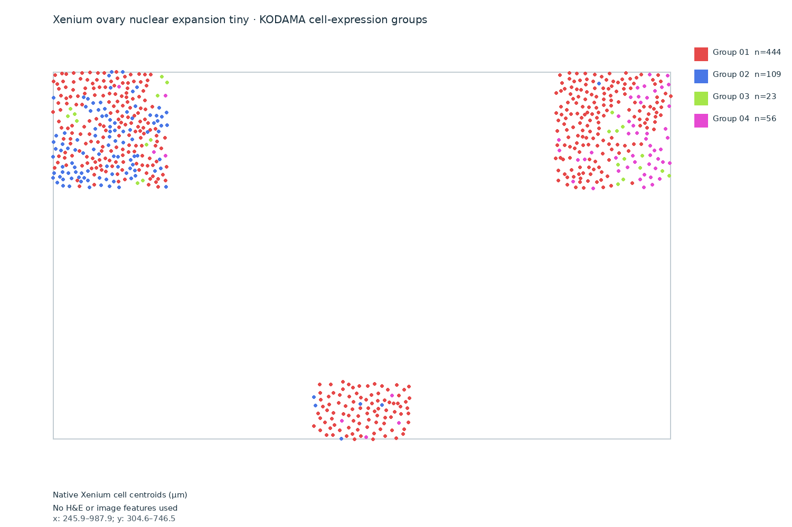
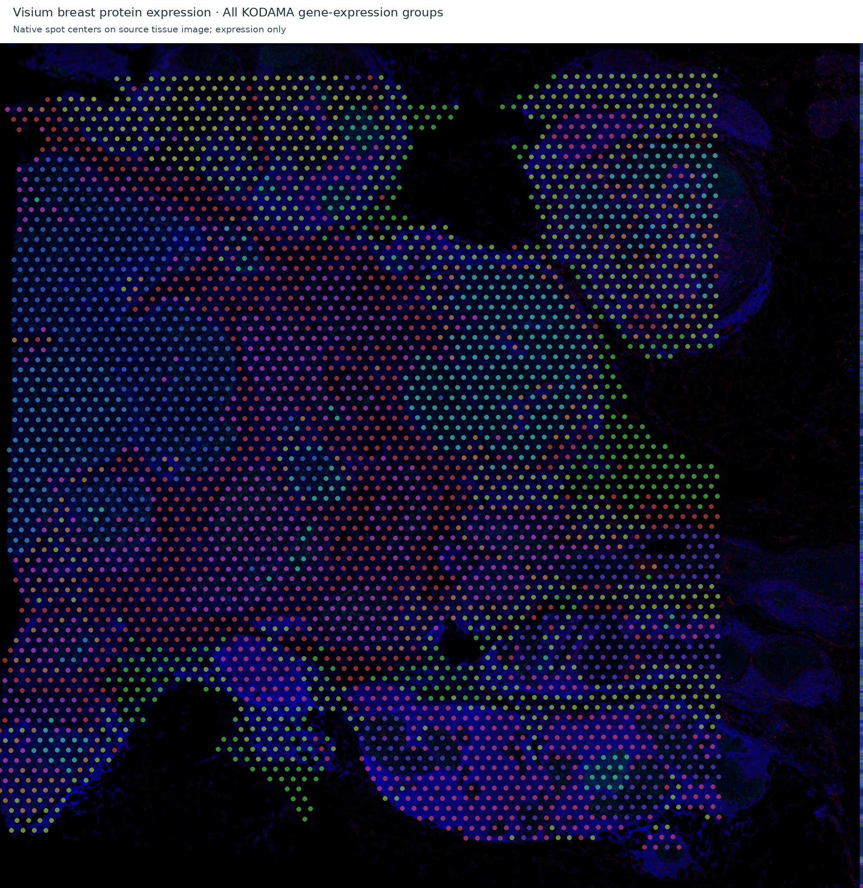
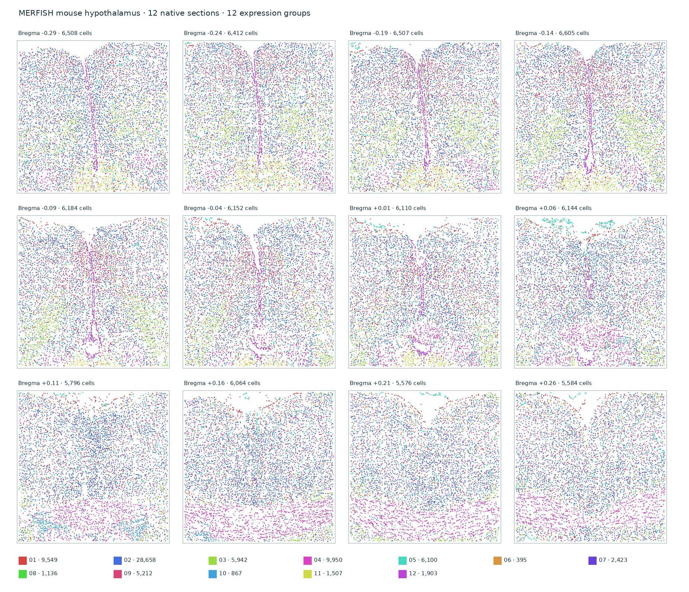
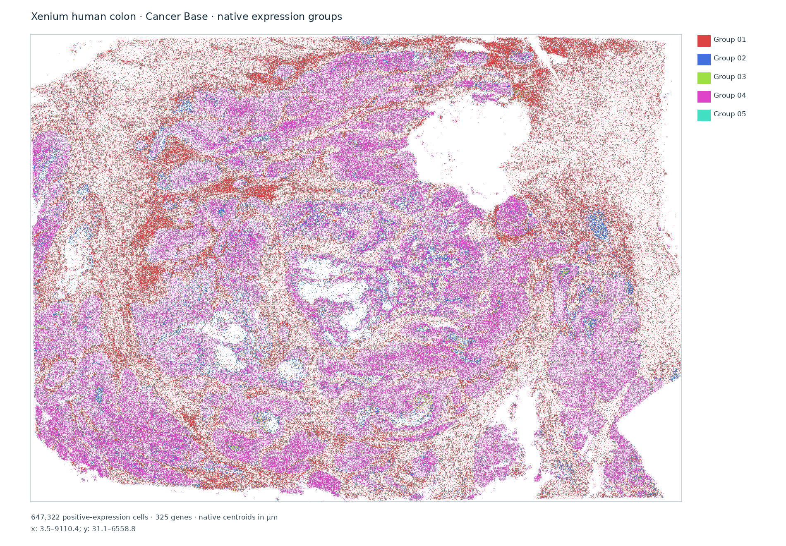
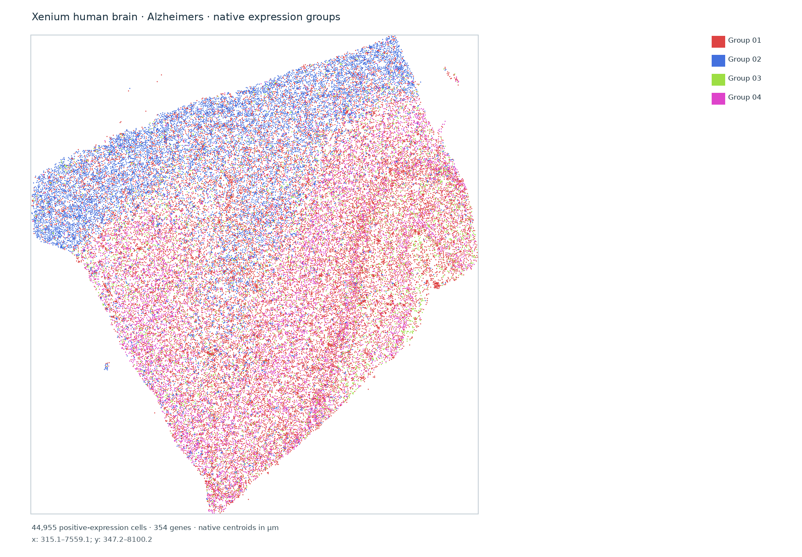
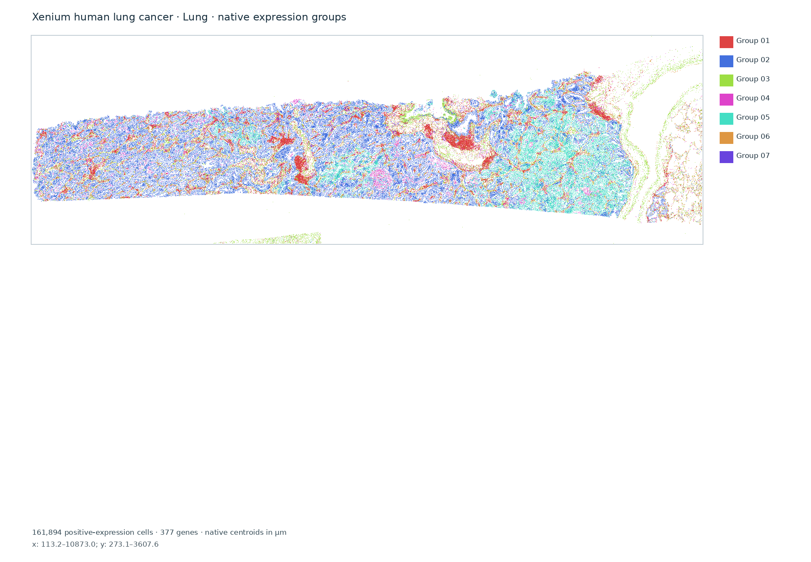

Explore native spatial expression
Groups are calculated from measured gene expression at native cell or spot coordinates. They are exploratory and have no tissue-class labels.

Xenium human ovary · multimodal tiny
10x Genomics tiny demonstration dataset; three separated source fields.

Xenium human ovary · nuclear expansion tiny
10x Genomics tiny demonstration dataset; three separated source fields.

Visium breast · IF gene expression
Gene-expression analysis only. This source uses immunofluorescence imaging; Bora image refinement and GeoJSON are not shown.

MERFISH mouse hypothalamus
Bioconductor MerfishData; native cell expression across twelve sections. No H&E or Bora polygon result.

Xenium Prime ovarian cancer
Full FFPE ovarian cancer sample; native Xenium Prime gene expression. Low-count groups need cautious interpretation. No H&E image features or Bora polygon result.

Xenium human colon preview
Complete non-diseased and cancer base/add-on panels. Native gene-expression KODAMA groups; no H&E/Bora polygon result.

Xenium human brain preview
Non-diseased brain, glioblastoma and Alzheimer’s disease source samples. Native gene-expression KODAMA groups; no H&E/Bora polygon result.

Xenium human lung cancer preview
Native gene-expression KODAMA groups. Preliminary preview dataset; no H&E/Bora polygon result.